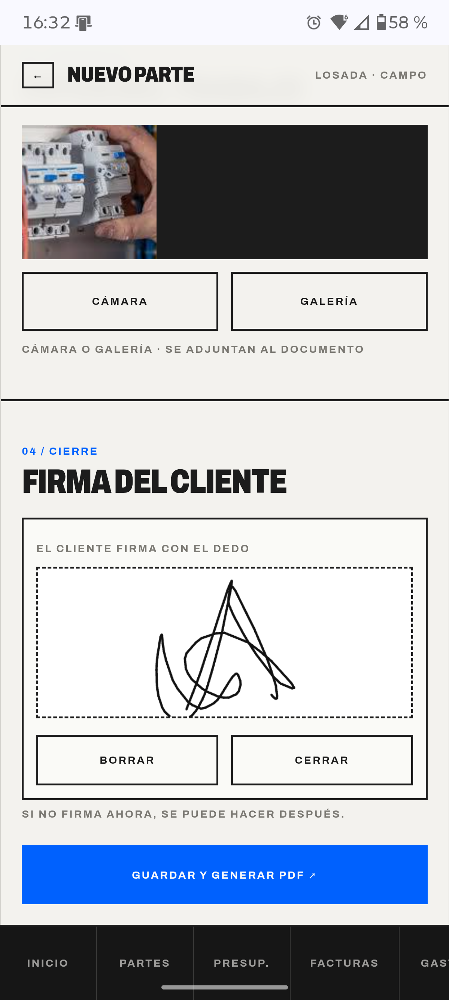
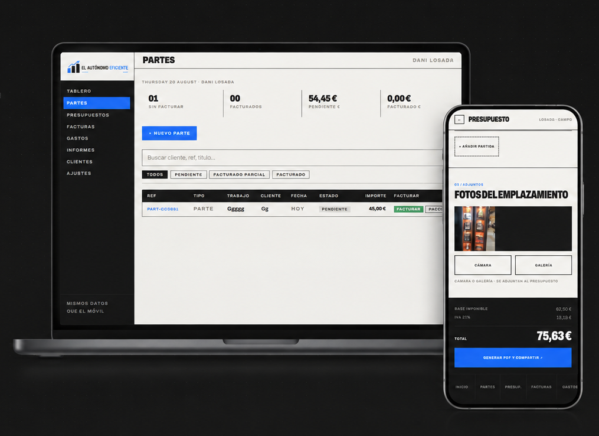
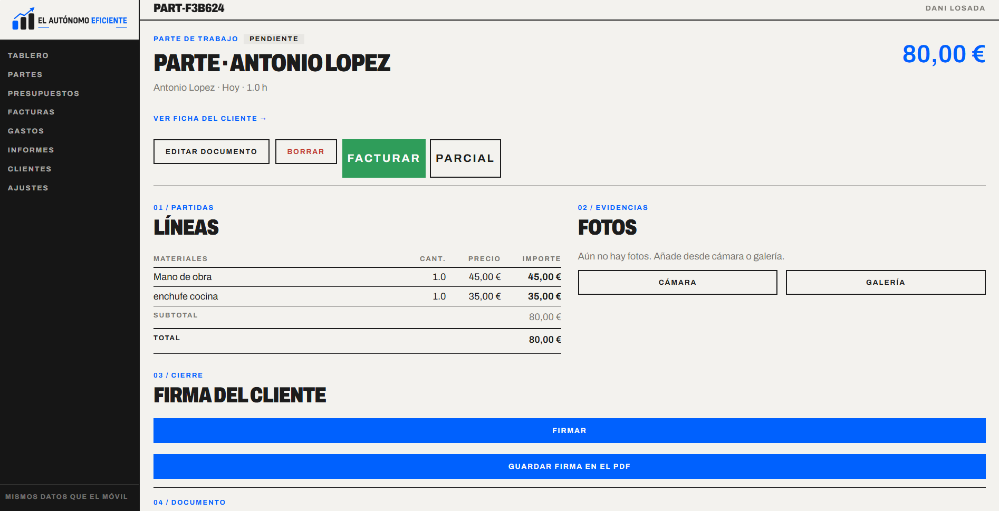

A / EN LA OBRA
CIERRAS EL PARTE CON EL CLIENTE DELANTE.
Horas, materiales, fotos y firma con el dedo. PDF al momento. Las notas internas no las ve el cliente.


El móvil en el cliente. El ordenador en el taller. El mismo parte, el mismo presupuesto, la factura a VeriFactu y las facturas de ingresos y gastos a la gestoría.

El trabajo se apunta una vez, donde ocurre.
Desde que llegas a casa del cliente hasta que las facturas de ingresos y gastos llegan a la gestoría.
Horas, materiales, fotos y firma con el dedo. PDF al momento. Las notas internas no las ve el cliente.

Listado de partes y presupuestos: pendiente, facturado parcial o facturado. Factura entero o cobra un anticipo.

La factura de ingreso lleva su QR VeriFactu. Para el gasto, fotografías el ticket y la IA rellena importe, IVA, proveedor y fecha. Después, tanto la factura emitida como la factura de gasto se envían al email de la gestoría.
La herramienta se puede personalizar para encajar con el trabajo de cada electricista o instalador: sus datos fiscales, tarifa por hora, IVA, logo, serie de facturación y conexión con su gestoría.
Trabajas en oficios o instalaciones, preparas presupuestos, facturas el trabajo y envías las facturas de ingresos y gastos a la gestoría. No es un ERP, una tienda online ni una «app de productividad».
HECHA A PARTIR DE LA HERRAMIENTA QUE YA USA UN INSTALADOR DE VERDAD: INSTALACIONES LOSADA.
Pide acceso a El Autónomo Eficiente y cuéntanos cómo haces hoy tus partes, presupuestos y facturas.
PEDIR ACCESO ↗HABLAR CON VOSOTROS ↗